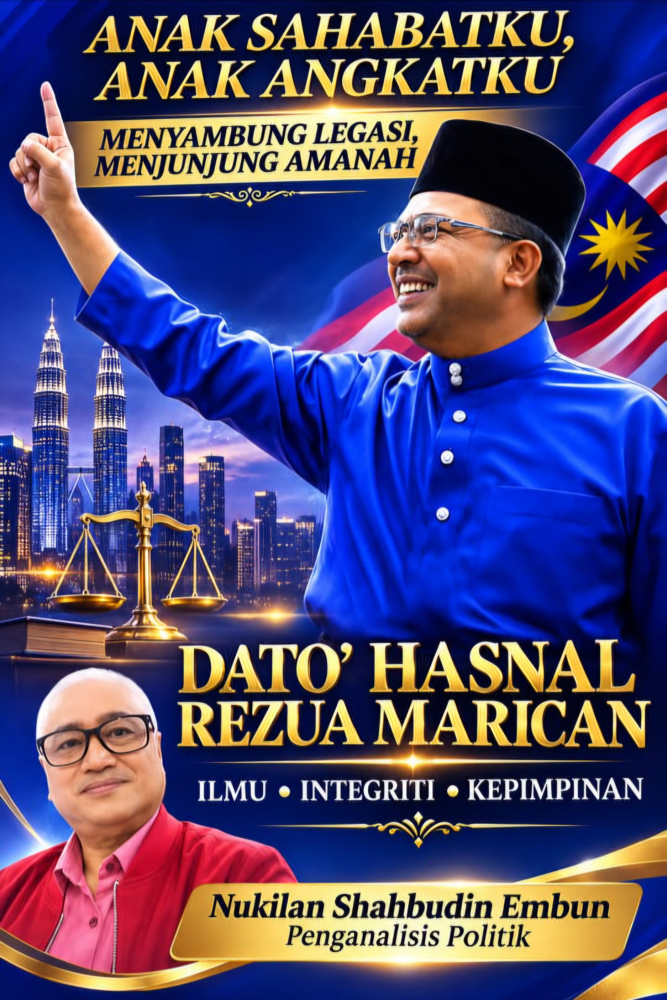

DARIPADA SEORANG SAHABAT, LAHIRNYA SEORANG PEWARIS LEGASI

Ada persahabatan yang terjalin kerana kepentingan,
ada persaudaraan yang terbina kerana kedudukan,
tetapi ada persahabatan yang kekal sepanjang zaman,
kerana ilmu, keikhlasan dan pengorbanan.
Aku mengenali ayahmu,
Allahyarham Peguam Habib Marican,
bukan sekadar sebagai seorang sahabat,
tetapi sebagai teman seperjuangan,
rakan sekuliah di Fakulti Undang-Undang UiTM,
dan insan yang banyak membimbing perjalanan ilmuku.
Di bawah bimbingannya aku belajar,
di bawah nasihatnya aku membina keyakinan,
hingga akhirnya berjaya menggenggam ijazah,
sebuah kejayaan yang sebahagian jasanya
akan terus terpahat dalam ingatan.
SEJARAH YANG WAJAR DICATAT, BUKAN SEKADAR DIKENANG
Ada satu kisah yang pernah diceritakan sendiri kepadaku,
kisah yang tersimpan dalam lipatan sejarah UMNO,
kisah tentang amanah, harta dan integriti,
ketika UMNO berdepan episod pengharaman parti
semasa era pemerintahan Tun Dr. Mahathir Mohamad.
Ketika itu, ayahmu memikul tanggungjawab besar
sebagai Pegawai Official Assignee
di Jabatan Kebankrapan.
Beliau diamanahkan menguruskan urusan harta UMNO,
termasuk usaha mendapatkan kembali
saham dan aset parti daripada para pemegang amanah.
Menurut cerita Allahyarham,
bukan semua pemegang amanah mudah menyerahkan kembali
segala harta yang diamanahkan kepada mereka.
Ada yang cuba mengelak,
ada yang berdolak-dalik,
hingga tindakan undang-undang dan notis mahkamah
terpaksa digunakan bagi memastikan amanah itu disempurnakan.
Namun, dalam episod penuh cabaran itu,
terdapat dua nama besar yang wajar disebut
sebagai contoh kejujuran dan integriti.
YBM TENGKU RAZALEIGH HAMZAH
dan
TUN MUSA HITAM.
Menurut kisah yang disampaikan Allahyarham kepadaku,
kedua-dua tokoh ini telah menyerahkan kembali
pegangan saham serta harta UMNO
yang berada dalam amanah mereka.
Malah, pesan mereka kepada Allahyarham
amat besar maknanya:
yang mungkin kami terlupa untuk serahkan,
pohon datang kembali bertemu kami."
Betapa tinggi nilai sebuah amanah!
Betapa mulianya jiwa seorang pemimpin!
Mereka tidak sekadar menyerahkan harta,
malah menunjukkan bahawa maruah dan integriti
jauh lebih berharga daripada segala kepentingan peribadi.
Inilah kisah yang pernah diceritakan kepadaku
oleh seorang sahabat yang aku hormati.
Inilah sejarah yang wajar didokumentasikan
agar generasi kemudian mengetahui
bahawa perjuangan parti bukan hanya tentang kuasa,
tetapi juga tentang amanah dan tanggungjawab.
DARIPADA AYAH, KEPADA ANAK: LEGASI DITERUSKAN
Kini, masa telah berlalu,
sahabatku telah pergi meninggalkan dunia,
namun kenangan dan jasa tidak pernah mati.
Di hadapanku kini berdiri anaknya,
Dato' Hasnal Rezua Marican,
anak sahabatku,
dan anak angkat yang amat aku kasihi.
Bukan sekadar seorang peguam berjubah hitam,
bukan sekadar insan yang petah berbicara,
tetapi seorang yang mempunyai ilmu,
pengalaman dan keberanian
mengharungi gelanggang perjuangan politik.
Tenang di mahkamah,
berwibawa di pentas antarabangsa,
berani berhujah dalam gelanggang politik,
namun tetap merendah diri
menyantuni masyarakat dan rakyat.
Itulah kepimpinan yang kita perlukan!
Pemimpin yang mempunyai otak dan pemikiran,
yang mampu berhujah dengan fakta dan hujah,
yang mempunyai pengalaman serta wawasan,
bukan sekadar mengejar jawatan dan kedudukan.
HARAPAN BUAT UMNO BAHAGIAN SELAYANG
Kepada seluruh warga kerabat UMNO Selayang,
aku ingin menitipkan satu seruan dari hati:
Berilah peluang.
Berilah kepercayaan.
Berilah sokongan kepada anak sahabatku ini.
Kita memerlukan pemimpin yang berilmu,
yang memahami denyut nadi rakyat,
yang berani mempertahankan prinsip perjuangan,
dan mempunyai kemampuan membawa UMNO
kembali dihormati serta diyakini masyarakat.
Dato' Hasnal Rezua Marican,
teruskan perjuanganmu!
Jadikan ilmu sebagai senjata,
integriti sebagai perisai,
pengalaman sebagai pedoman,
dan khidmat kepada rakyat sebagai matlamat.
Jangan hanya mewarisi nama ayahanda,
tetapi warisilah nilai dan prinsip perjuangannya.
Kerana nama boleh diwarisi,
jawatan boleh dipertandingkan,
tetapi kepercayaan dan integriti
hanya boleh dibina melalui kejujuran.
PENUTUP: DOA SEORANG SAHABAT, HARAPAN SEORANG BAPA ANGKAT
Wahai anak sahabatku,
ayahmu pernah membimbing perjalanan ilmuku,
kini aku mendoakan perjalanan hidupmu.
Semoga Allah SWT mempermudah segala urusanmu,
mengurniakan kejayaan dalam kerjaya guamanmu,
memperteguhkan kepimpinanmu di UMNO Bahagian Selayang,
dan menjadikan setiap langkahmu
bermanfaat kepada agama, bangsa dan tanah air.
Andai ayahmu masih ada,
pastinya beliau tersenyum melihat perjalananmu.
Aku mungkin kehilangan seorang sahabat,
tetapi aku tidak mahu kehilangan legasi perjuangannya.
AYAHMU MENINGGALKAN JASA.
ENGKAU MEMBAWA HARAPAN.
DAN SEJARAH AKAN MENGENANG
MEREKA YANG MENJUNJUNG AMANAH.
Aamiin Ya Rabbal Aalamiin.
SHAHBUDIN EMBUN
Penganalisis Politik
Sahabat Allahyarham Peguam Habib Marican
Bapa Angkat Dato' Hasnal Rezua Marican